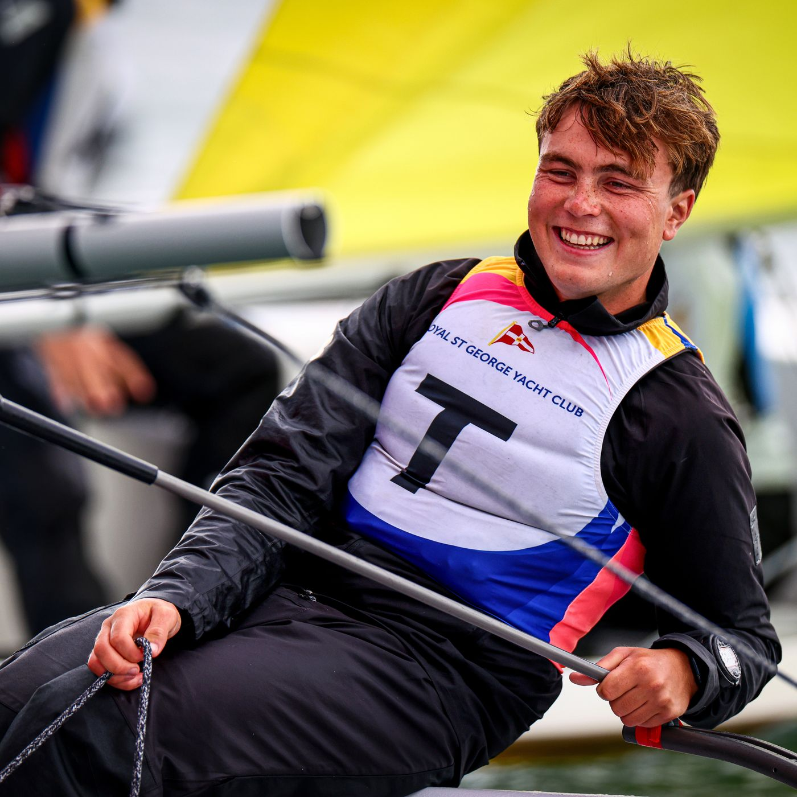
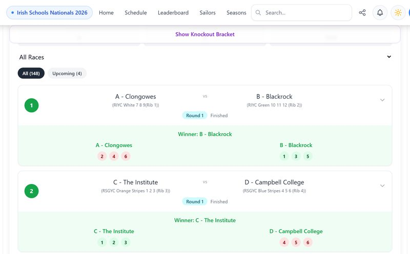
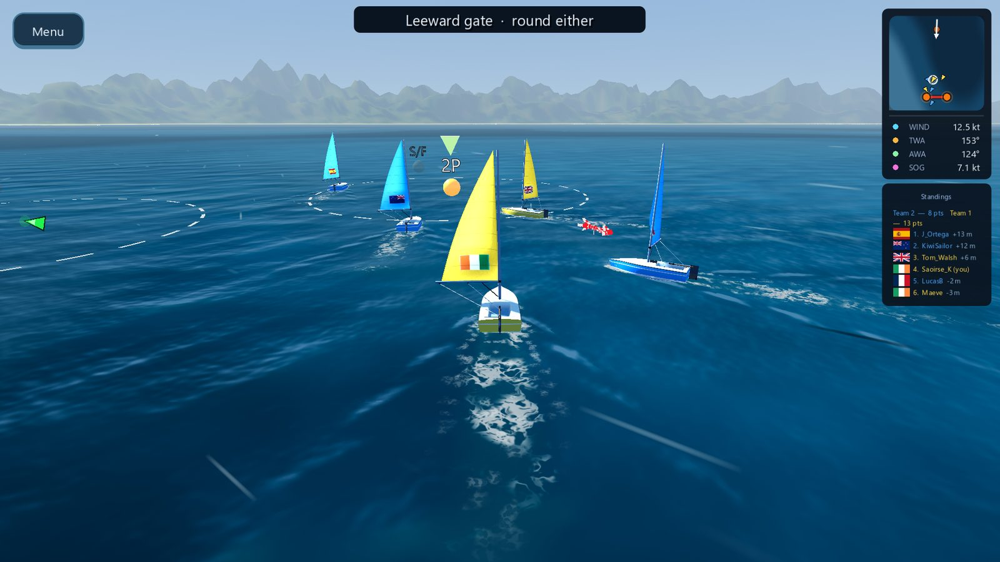

A team racing regatta is a round robin of short races, often more than a hundred of them.


An online dinghy racing game with an umpire in every race. It is on the App Store, on Android, on Windows, Mac and Linux, and in the browser.